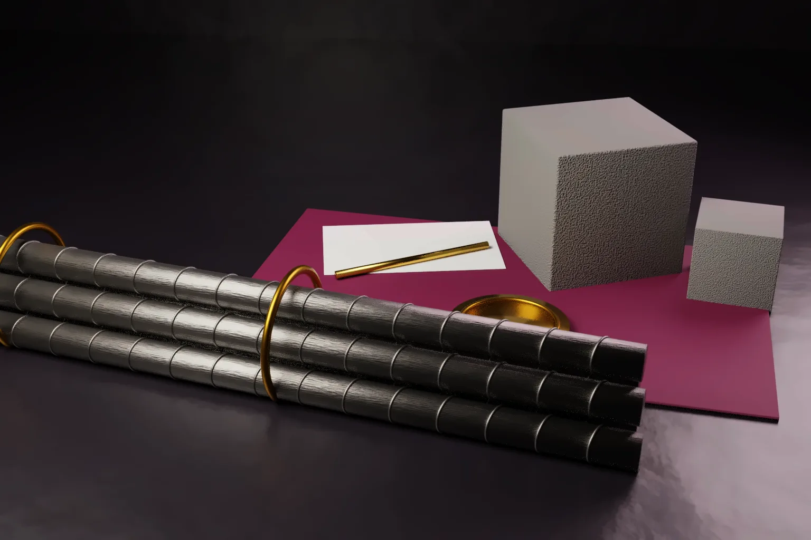

Can a well known trademark stop use of the same mark in a different class? On 1 October 2026 a Division Bench of the Karnataka High Court said yes on the facts before it. In ACC Steel Pvt Ltd v ACC Limited, the court dismissed an appeal by a steel company that sold TMT bars as ACC TMT 500.
The ruling matters to every brand owner whose mark is famous in one market and copied in a neighbouring one. This article explains the decision and compares the position in the United States, Europe, the UK, China and Japan.
- In ACC Steel Pvt Ltd v ACC Limited, the Karnataka High Court upheld a decree against use of ACC for steel products and in a company name. The case is Commercial Appeal No. 273 of 2025, decided on 1 October 2026.
- ACC Limited makes cement and ready mix concrete and its registrations are mostly in Class 19. ACC Steel deals in Class 6 steel products.
- The court held that the difference in classification does not settle the matter. Protection for a well known or reputed mark extends beyond similar goods under sections 11(2) and 29(4).
- ACC Steel’s own registration did not help. Section 28 rights are subject to the rest of the Act, and the registration had been stayed in rectification proceedings.
- The US protects famous marks against dilution. The EU and UK protect marks with a reputation. Both regimes, like India’s, require more than a famous name.
The dispute
ACC Limited says it has used the mark ACC since 1938 for cement. It holds word and device registrations, mostly in Class 19. It also relied on its logo, its red and white colour scheme and the artistic work in its label.
ACC Steel Pvt Ltd was incorporated in February 2019. It sells steel and metal products, including TMT bars sold as ACC TMT 500. It obtained a Class 6 registration and claimed use since 2015 through a predecessor partnership. It said ACC was coined from the names of the partners’ fathers and a place name.
ACC Limited sued in October 2020 in the Commercial Court, Bengaluru Rural, for infringement, passing off and copyright infringement. An interim injunction followed. In November 2024 the Commercial Court decreed the suit in part. It granted a permanent injunction and directed ACC Steel to change its company name with the Ministry of Corporate Affairs. It also ordered delivery up of infringing material and rendition of accounts. A claim for Rs 10 lakh in damages was refused for want of proof, with liberty to pursue it in the accounts.
What the High Court decided
The appeal was heard by Justice D K Singh and Justice H Shanthi Bhushan. Justice Shanthi Bhushan wrote the judgment.
ACC Steel made four main arguments. Its Class 6 registration was valid. Cement and steel fall in different classes. The words TMT 500 distinguished its mark. And there was no proof of actual confusion.
The court rejected each one. On registration, it held that section 28 “has to be read subject to the other provisions of the Act.” Section 31 makes registration only prima facie evidence of validity. ACC Steel’s registration had also been stayed by the Intellectual Property Appellate Board in rectification proceedings in October 2020.
On classes, the court held that “the difference in classification by itself does not conclude the matter.” ACC appears in the list of well known trade marks maintained under Rule 124 of the Trade Marks Rules, 2017. The court considered the factors in sections 11(6) and 11(7). These include the duration and extent of use, publicity and the trade channels for the goods. It held that protection for a well known or reputed mark extends beyond similar goods under sections 11(2) and 29(4).
On the company name, the court held that use of ACC in the corporate name gave an independent basis for relief under section 29(5). It also upheld the findings on copyright and passing off. Those rested on the similar presentation, font, colours and get up, and on evidence of market enquiries suggesting a connection. The appeal was dismissed without costs.
Why classes are not the test
The Nice classes are an administrative tool for filing and fees. They do not define the limits of protection. Section 29(2) of the Trade Marks Act, 1999 covers identical or similar goods where confusion is likely, whatever their class. Section 29(4) goes further for registered marks with a reputation in India. It covers use on goods that are not similar. The use must, without due cause, take unfair advantage of or harm the mark’s distinctive character or repute.
Cement and steel bars sit side by side in the construction trade. They move through overlapping trade channels to the same construction customers. That market reality, and the long reputation of ACC, weighed more than the class numbers.
Under section 11(9), a well known mark need not be used or registered in India, or known to the public at large. Our earlier article on two businesses sharing one word explains how Indian courts weigh related goods and prior use.
What the ruling does not decide
- It does not hold that every listed well known mark wins against any use on any goods. Section 29(4) still requires unfair advantage or detriment without due cause. Here the goods shared a market and the get up was similar.
- It does not decide damages. The accounts proceedings remain open.
- It does not settle how far section 29(5) reaches beyond the registered goods. The provision refers to goods or services for which the mark is registered. Where the defendant’s goods differ, owners should also plead section 29(4) and passing off, as ACC did.
The Tribunals Reforms Act, 2021 abolished the Intellectual Property Appellate Board. Rectification applications now go to the Registrar or the High Court.
The United States: dilution of famous marks
US law protects famous marks against dilution under 15 U.S.C. 1125(c). A mark is famous only if it is widely recognized by the general consuming public of the United States as a designation of source. Fame within a niche market is not enough. That bar is higher than India’s test of the relevant section of the public.
Once fame is shown, the owner can stop dilution by blurring or by tarnishment. Likelihood of confusion, competition and actual economic injury need not be proved. The main remedy is an injunction. Damages require wilful conduct.
Most US disputes over related goods are still decided on likelihood of confusion, weighing the strength of the mark and the relatedness of the goods.
Europe and the UK: marks with a reputation
Article 9(2)(c) of Regulation (EU) 2017/1001 protects an EU trade mark with a reputation in the Union. It applies to identical or similar signs on any goods. The use must, without due cause, take unfair advantage of or harm the distinctive character or repute of the mark. Article 8(5) gives the same ground in opposition before the EUIPO.
The Court of Justice has set the main tests. In General Motors (C-375/97), it held that the mark must be known by a significant part of the public concerned by the goods. In Intel (C-252/07), it held that the public must make a link between the marks. Detriment to distinctive character needs evidence of a change in the economic behaviour of the average consumer. In L’Oréal v Bellure (C-487/07), it held that riding on the coattails of a mark can be unfair advantage without any harm to the owner.
Use as a company name can also infringe. In Céline (C-17/06), the Court held that a company or trade name can infringe when it is used in relation to goods or services, for example on the goods themselves. The UK applies the same principles under section 10(3) of the Trade Marks Act 1994.
China and Japan in brief
China protects well known marks under Article 13 of its Trademark Law. A registered well known mark can be protected against use on dissimilar goods where the public may be misled and the owner’s interests harmed. Under Article 14, recognition is made case by case. Article 14 also bars use of the words well known trademark on goods, packaging and advertising.
Japan refuses marks likely to cause confusion with another’s business under Article 4(1)(xv) of its Trademark Act. Its Unfair Competition Prevention Act also protects famous indications against use on any goods, without proof of confusion.
Practical steps for brand owners and new businesses
- Search before adopting a brand or a company name. A clear register in your own class is not enough if a well known mark exists elsewhere.
- Owners of strong marks should consider a Rule 124 request for inclusion in the well known list. Keep evidence of use, sales, advertising and enforcement in order.
- Plead each route that applies. Infringement under sections 29(2) and 29(4), passing off and copyright in the label can each succeed on different facts.
- Seek rectification of a conflicting registration early. A stay or removal takes away the registration defence.
- For the US and Europe, collect evidence of fame or reputation for each market. India’s list does not prove fame abroad.
Our trademark search, filing and enforcement team can review a proposed brand or company name against well known marks in India and abroad.
Frequently asked questions
Can a well known trademark be protected in a different class in India?
Yes. Sections 11(2) and 29(4) of the Trade Marks Act, 1999 protect well known and reputed marks beyond similar goods. The owner must still show unfair advantage or detriment without due cause. In ACC Steel v ACC, the Karnataka High Court applied this to cement and steel.
Is a trademark registration a defence to infringement in India?
Not always. Section 28 rights are subject to the rest of the Act, and section 31 makes registration only prima facie evidence of validity. In ACC Steel v ACC, the defendant’s registration had been stayed in rectification proceedings.
How do I get a trademark declared well known in India?
The owner can apply to the Registrar under Rule 124 of the Trade Marks Rules, 2017 with evidence of reputation. Courts can also find a mark well known in a suit.
Official source
- ACC Steel Pvt Ltd v ACC Limited, Karnataka High Court, Commercial Appeal No. 273 of 2025, judgment of 1 October 2026
- The Trade Marks Act, 1999 on India Code (sections 2, 11, 28, 29 and 31)
- 15 U.S.C. 1125, including subsection (c) on dilution
- Regulation (EU) 2017/1001 on the European Union trade mark
- Intel Corporation v CPM United Kingdom, Case C-252/07
- UK Trade Marks Act 1994, section 10